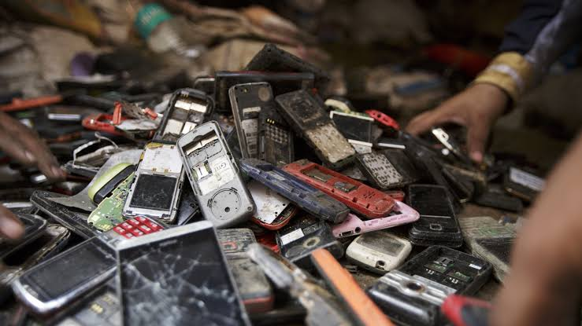
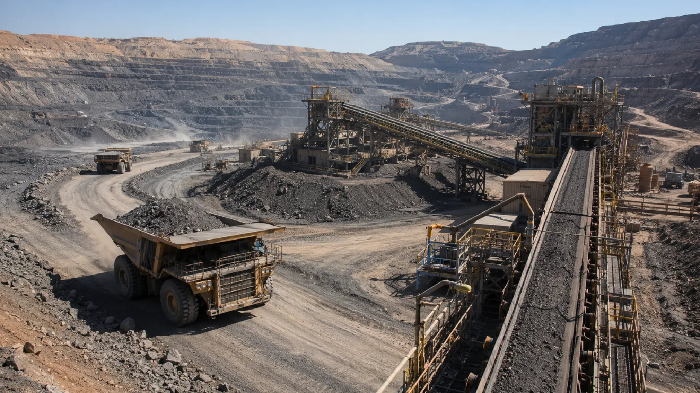

Financial
Banks, leasing companies and other financial institutions requiring secure data destruction and responsible electronic waste management.
Ceylon Waste Management provides responsible waste management, recycling, resource recovery and secure destruction solutions for a wide range of industries and organizations.
Banks, leasing companies and other financial institutions requiring secure data destruction and responsible electronic waste management.

Ministries, departments, semi-government institutions and universities requiring secure and compliant waste management solutions.
Private and public enterprises requiring e-waste recycling, secure data destruction and responsible waste management.

Hospitals, clinics, laboratories, pharmacies and drug manufacturers managing electronic, mercury and specialized waste streams.

Electronics manufacturers, data centers, telecommunications companies and broadcasting organizations.

TVs, monitors, printers, toner cartridges and organizations operating large-scale e-waste programs.

Automotive, metals, electroplating and general manufacturing industries generating industrial and hazardous waste.

Basic and specialty chemical manufacturers, process industries and water treatment facilities.

Mining, extraction, mineral beneficiation and operations focused on by-product recovery and resource utilization.

Downstream processing operations and facilities requiring responsible handling of residues and resource recovery.
Industrial influents, wastewater treatment facilities and organizations requiring compliance-focused waste solutions.

Hotels, commercial buildings, apartments, property facilities and organizations managing large volumes of waste.

Jewelry manufacturers, catalytic converter streams, imaging industries and other sources containing valuable precious metals.

Print shops, high-volume printing users, cartridge users and organizations generating toner and printing-related waste.
Talk to our team about your organization's recycling, waste management or secure destruction requirements.
Ceylon Waste Management provides responsible collection, recycling, recovery and waste management solutions for organizations across a wide range of industries.
From secure data destruction and electronic waste recycling to precious metal recovery and hazardous waste management, our services help organizations reduce environmental impact while maintaining responsible waste handling practices.
| Service | Industries Served | Notes |
|---|---|---|
| Security Data Destruction | Financial institutions, healthcare organizations, government agencies, legal firms, IT companies and supermarkets. | Businesses that handle sensitive data require secure destruction, particularly due to data protection requirements. |
| Precious Metal Refining | E-waste generating individuals and corporate organizations, electronics manufacturing, jewelry, mining, automotive industries including catalytic converters, and dental clinics. | Suitable for industries that generate waste containing gold, silver, platinum, palladium and other valuable metals. |
| Mercury Waste Management | Healthcare facilities, lighting industry, dental clinics, manufacturing plants and mining. | Mercury may be found in thermometers, blood pressure devices, fluorescent lamps and dental amalgams. Proper handling helps prevent environmental contamination. |
| E-Waste Recycling | IT companies, telecommunications, educational institutions, electronics manufacturing and offices. | Includes computers, laptops, servers and other electronic equipment. |
| Old TV & Monitor Recycling | Offices, hotels, broadcast industry, educational institutions and entertainment venues. | Focuses on responsible recycling of commercial and industrial sources. |
| CFL Bulb Recycling | Commercial buildings, offices, factories, hotels, educational institutions and retail stores. | High Mercury Content: Fluorescent bulbs, including linear bulbs, contain mercury and must be handled securely to prevent environmental contamination. |
| Panel TV Recycling | Offices, hotels, broadcast industry, educational institutions and entertainment venues. | Mercury Warning: Certain plasma and flat-panel display technologies may contain mercury-containing components and require specialized recycling. Includes panel displays. |
| Toner & Cartridge Recycling | Offices, educational institutions, printing companies and businesses with high-volume printing. | Toner powders and certain cartridge components can pose inhalation or environmental risks if released. Safe collection and processing reduce potential air and soil contamination. |
| Metal-containing Industrial Hazardous Waste Management | Chemical manufacturing, pharmaceuticals, automotive, metal finishing and textile industries. | Covers a wide range of industrial hazardous waste streams. |
| Paper Recycling | Offices, publishing houses, printing companies, retail businesses and educational institutions. | Suitable for businesses that generate large volumes of paper waste. |

We support responsible recycling and resource recovery practices to reduce the amount of waste sent to disposal.
Sensitive and hazardous waste streams require controlled collection, transportation and processing.

Our solutions help organizations reduce environmental risks associated with improper waste disposal.

We provide waste management solutions designed for different commercial, industrial and organizational requirements.
Contact CWM to discuss your organization's waste management and recycling requirements.